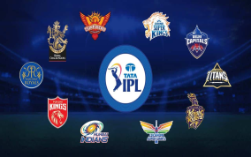
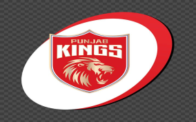
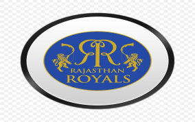

The ten teams were divided into two groups of five. BCCI has announced in the group stage each team will be playing twice against the teams in their group and against the team in the same row in the other group; against the remaining four teams in the other group, each team will play only once.



